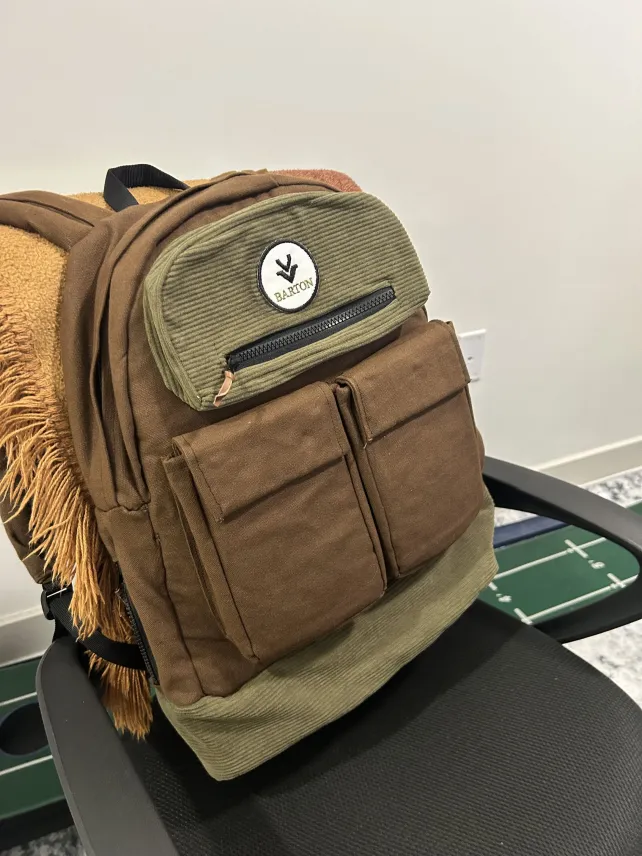
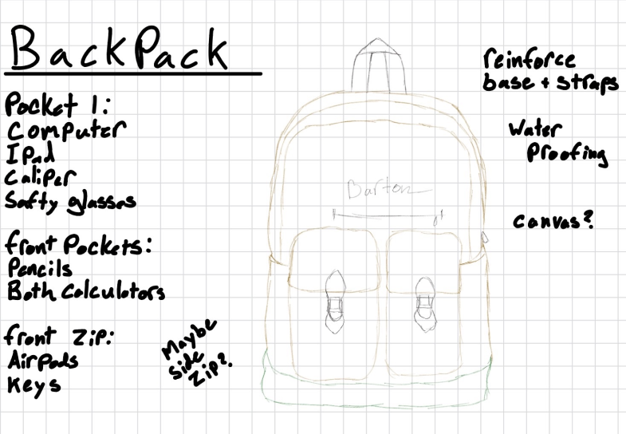
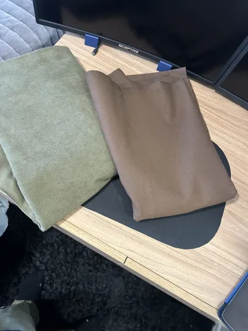
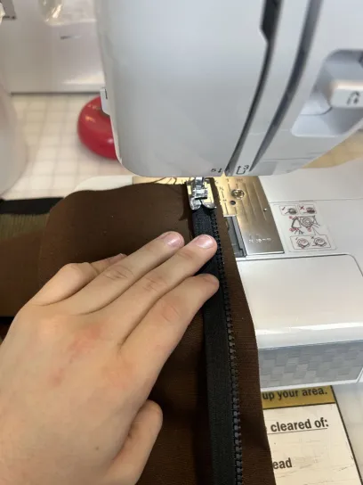
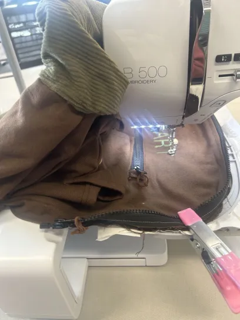
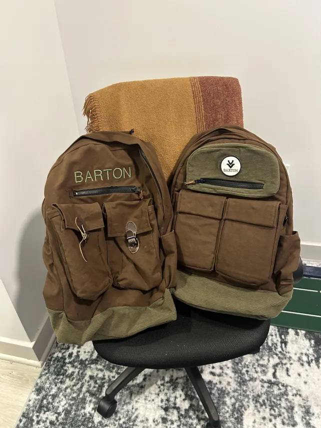
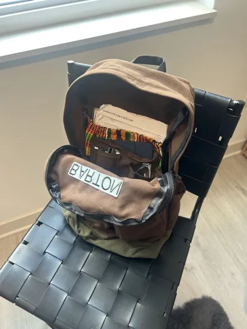
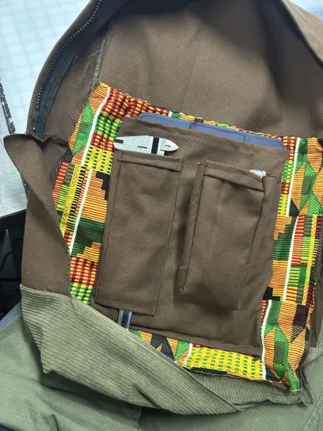
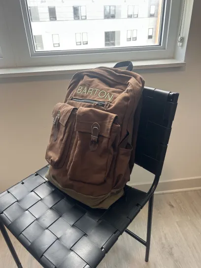
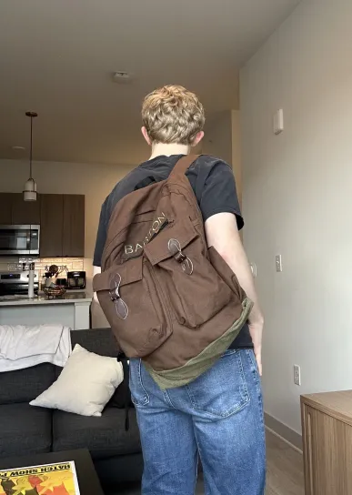

Sheet 11 · Personal · In daily use
Reinforced Backpack
A block of metal stock tore through my bag, so I built one that carries what an engineering student actually carries. Two versions, five layers in the load-bearing areas, and a sewing machine I had never touched before.
- Trigger
- Metal stock punctured
a commercial pack - Time to V1
- Two days, start to finish
- Shell
- Corduroy over duck
cloth canvas - Liner
- Waterproof, structural
- Layers
- Five in load-bearing areas
- Straps
- Dyneema reinforced
- Versions
- Two
- Status
- Daily carry
01Requirements from a failure
Backpacks are designed for books and laptops. I carry aluminium stock, hand tools, calipers, safety glasses and electronics, and a piece of 6061 with a sawn edge went straight through the bottom of my bag.
So I wrote the requirements from the failure modes rather than from a product category. Puncture resistance where heavy stock sits. Separation between heavy loads and fragile instruments, because my safety glasses and calculator kept getting crushed by everything else. Dedicated homes for the things I reach for daily. Water resistance, because Indiana.
Two days later I had sourced the materials, learned to use a sewing machine, and built the first one.

02Material stack
The layup does the work. Brown corduroy as the structural exterior for abrasion resistance and load bearing, a green duck cloth canvas reinforcement layer for tear resistance in the high stress areas, and a waterproof interior liner that also stiffens the bag so it holds shape under load without becoming a board.
Five layers in the load-bearing zones, which is what actually stops puncture. Straps and handles carry Dyneema reinforcement, because the strap is the single point of failure on any bag carrying real weight and there is no graceful version of it letting go.


03Learning to sew
I had never used a sewing machine. Threading, bobbin setup, stitch selection, and how to feed five layers of heavy fabric without wandering off the seam: all of it learned on a Brother machine in Purdue’s Active Learning Center over two days.
Sewing thick multi-layer seams straight takes planning, particularly around the straps and load-bearing sections where the layer count is highest and the consequences of a bad seam are worst. I also put my surname on the front panel with a Brother B500 embroidery machine, which meant learning backing material and frame alignment as a separate exercise.
It is a completely different fabrication discipline to machining and it scratched exactly the same itch.


04Version 2
After living with V1 I built a second one with a cleaner shape and better daily usability. Foam went in to hold structure so the bag stops looking baggy when it is not full, which made the whole thing feel finished rather than homemade.
The buckled front pocket straps became magnets sewn directly into the fabric, because a buckle you open twenty times a day is twenty small frustrations. The front zip pocket got larger, and a side pocket for keys means I can get to them without taking the bag off.





05In service
I have carried it daily across campus for months with metal stock, electronics and precision instruments in it, in the rain. The liner keeps the contents dry, the reinforcement has taken the puncture loads that destroyed the commercial bag, and the strap distributes weight comfortably when it is heavy. Nothing has torn.
The best test protocol available for a bag is carrying it every day for a term. Everything I would have measured on a bench, I found out by using it.
Service note
What I would change on a V3: the corduroy picks up shop dust and would be better in a tighter weave, and I would build a removable padded insert for the instrument pocket rather than sewing the divisions in, so the layout can change with what I am carrying that semester.